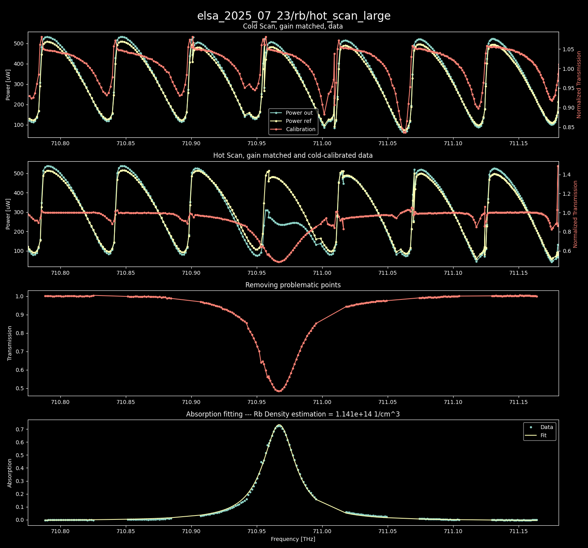
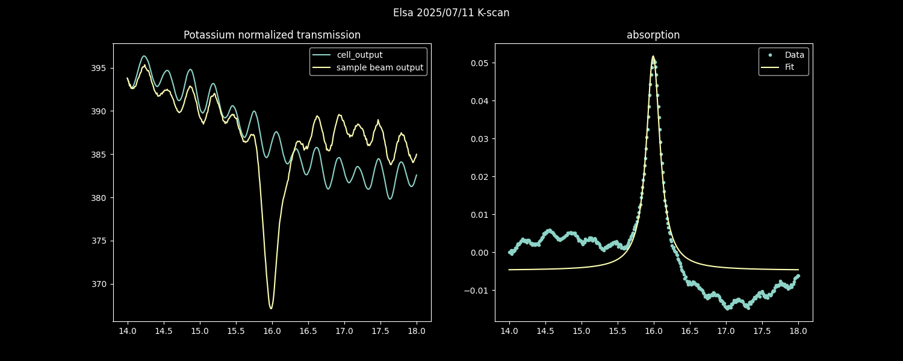
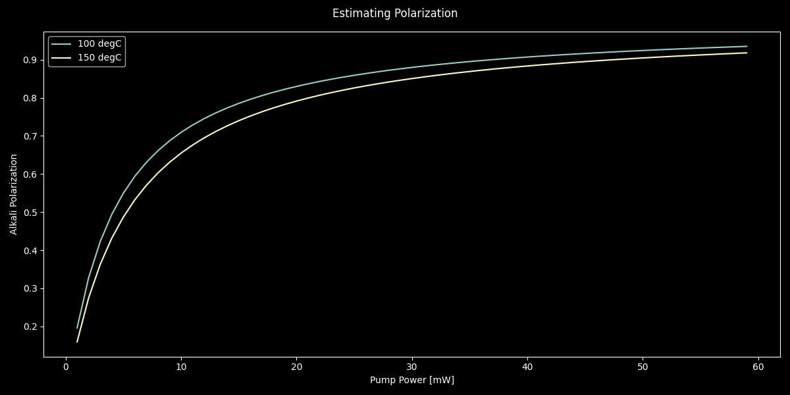
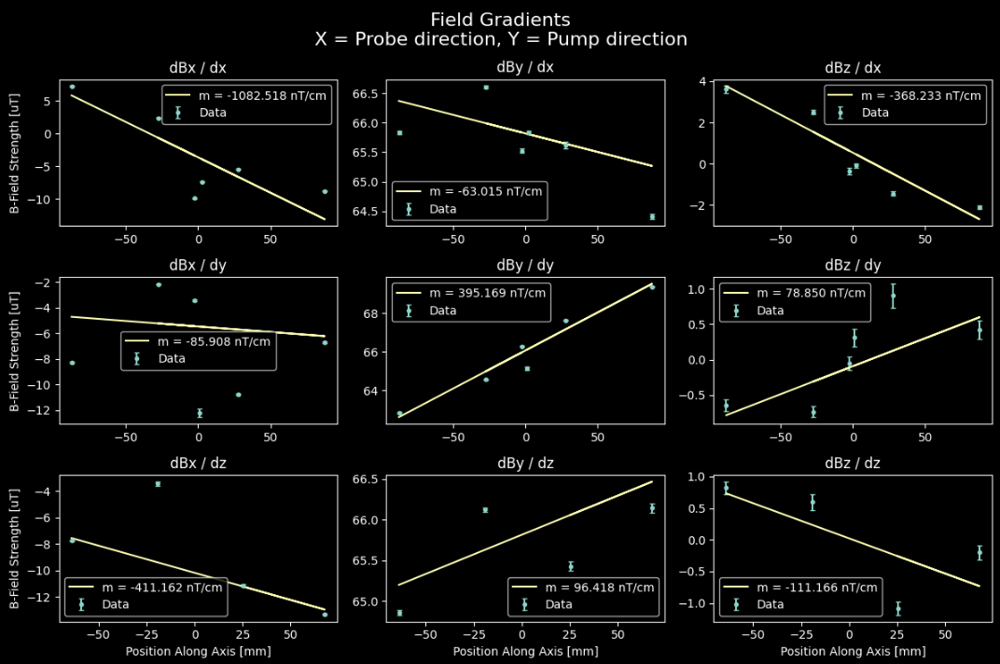
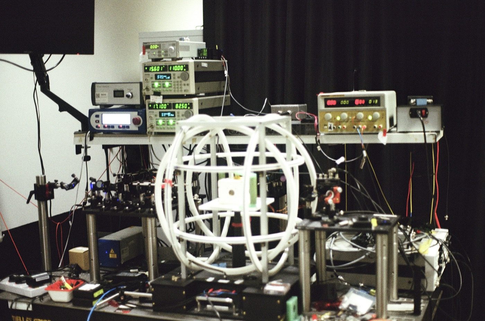

Atomic Vapor Cell Group · Quantum Innovation Centre
Hybrid Optical Pumping
Testing how density imbalance affects spin-temperature equilibrium and polarization transfer in hybrid alkali-vapour cells.
Project Abstract
At A*STAR Q.InC, I designed an experiment to investigate a common assumption in hybrid alkali-vapour cells: that spin-exchange collisions maintain spin-temperature equilibrium between the atomic species. Hybrid pumping optically pumps a donor species that is relatively optically thin; collisions then transfer polarization to a receiver species that is optically thick, helping produce more uniform polarization while preserving the receiver's signal coherence.
We focused on how this picture changes when the species densities become strongly imbalanced. Because spin-exchange rates depend on density and collisional cross-section, reducing the potassium density to improve pumping uniformity may cause the potassium and rubidium polarizations to diverge. The experiment was designed to measure both species' densities and polarization across cells with different density ratios.
The longer-term aim is to understand when hybrid pumping remains effective and use that knowledge to improve vapour-cell uniformity and atomic-magnetometer sensitivity.
Background And Motivation
Optical pumping uses resonant light to create a preferred spin orientation in an atomic ensemble. In a hybrid cell, light can pump one species directly while spin-exchange collisions transfer polarization to a second species. This is useful when the receiver absorbs pump light strongly: direct pumping may polarize only atoms near the illuminated region, whereas polarization transfer can help produce a more uniform spin state throughout the cell.
Many treatments assume the two species reach spin-temperature equilibrium. The presentation highlights a possible limit to that assumption: the spin-exchange rate scales with the density of collision partners and the relevant collision cross-section. If the potassium density is made much smaller than the rubidium density, the rates linking the two ensembles may no longer keep their polarizations aligned. Measuring both densities and both polarizations across a range of cell compositions tests where this approximation begins to fail.
Results And Next Steps
Initial cell-characterization work includes potassium absorption scans and an absorption-fit estimate of the rubidium number density in the Elsa cell: approximately 1.141 × 1014 cm−3 in the supplied 23 July 2025 analysis. The characterization figures also document potassium transmission/absorption and measured magnetic-field gradients across the probe, pump, and cell axes.
A supplied polarization estimate compares 100 °C and 150 °C operation as pump power increases. It suggests that polarization rises with pump power in both cases, reaching roughly 0.9 at the upper end of the plotted range. This is an estimate, not a direct measurement of the density-ratio dependence that motivates the project.
The central next step is to complete matched density and polarization measurements for the planned cell set, then compare potassium and rubidium polarization against the measured density ratio. This will establish whether and where the spin-temperature approximation breaks down, and how that affects hybrid-pumping uniformity.
Methodology
Cell and density characterization
The project plan called for hybrid vapour cells with different potassium-to-rubidium density ratios. Absorption spectroscopy provides an estimate of each species' number density. For the potassium characterization shown here, the cell is heated, a potassium laser is sent through the cell, and its frequency is swept across an absorption resonance. Comparing the transmitted signal with a reference scan reveals the absorption line, which can be fitted to estimate the vapour density.
The supplied Elsa analysis includes a rubidium absorption fit and a potassium D1 absorption scan. These characterize the cell and measurement response; they do not by themselves establish the final relationship between density ratio and hybrid-pumping efficiency.
Polarization and field measurements
The planned comparison measures polarization through two routes: one using potassium and one using rubidium. Faraday rotation provides an optical readout of the atoms' spin polarization. Recording both species allows their polarization to be compared directly as the density ratio changes.
Magnetic-field gradients across the cell are also characterized because spatial field variation can affect the measured resonance and polarization. The supplied gradient plot reports the fitted field variation along the probe, pump, and third cell axis, providing a map of an important experimental condition.
Citations
“Hybrid Pumping Research Project – Atomic Vapor Cell Group,” project presentation, A*STAR Quantum Innovation Centre (Q.InC), 29 January 2026.
“Hybrid Pumping Cell Characterization,” experimental analysis and measurement notes, including Elsa potassium and rubidium absorption scans.
Cell Characterization
Selected absorption, density, polarization, and field-gradient plots from the supplied project materials.




